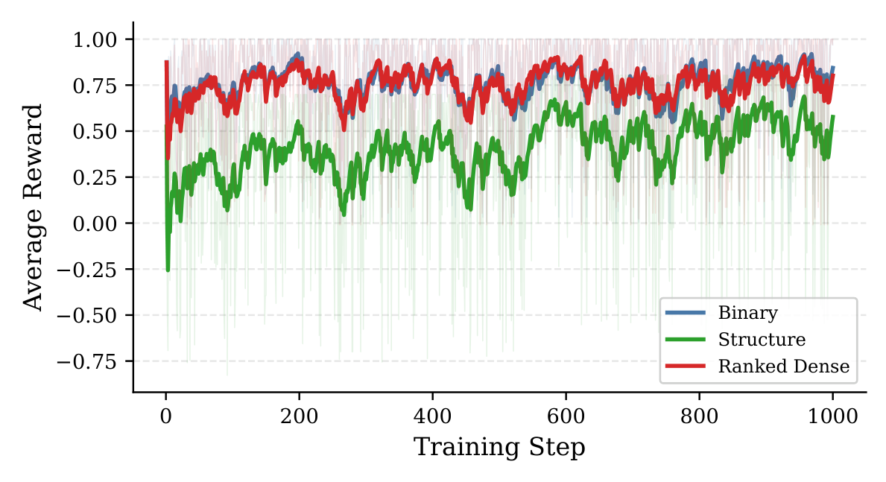
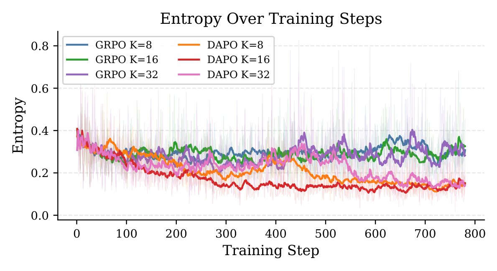
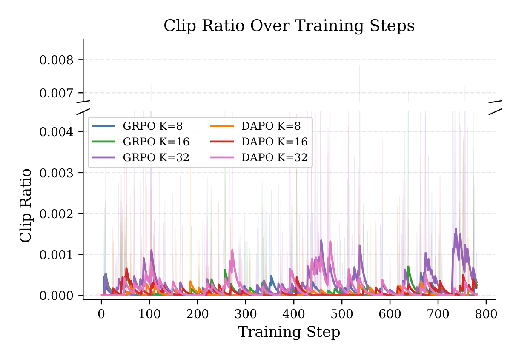
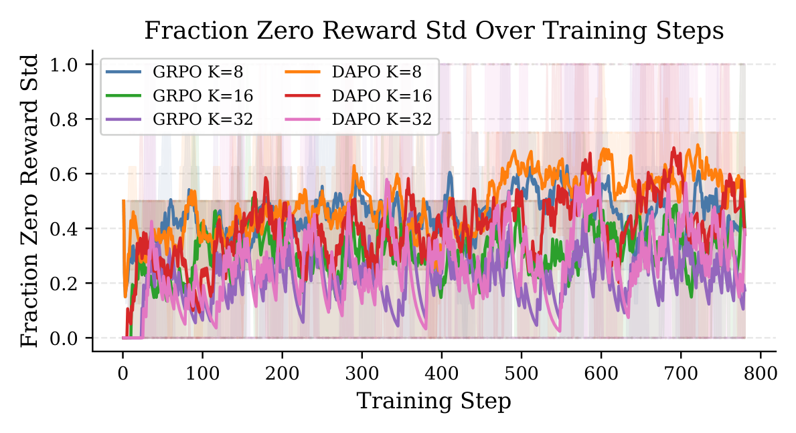

Wide charts and tables scroll horizontally.
Reward Design in Small-Model RLVROptimization dynamics on GSM8K with Qwen3 0.6B
York College of Pennsylvania
How reward design changes optimization
Objectives, group size, and reward design change the optimization behavior of Qwen3 0.6B on GSM8K. This study tracks entropy, clipping, and groups with zero reward variance alongside accuracy. Structure plus correctness produces a rising reward curve, while reported accuracy gains remain small.
Experimental setup
All runs start from the same Qwen3 0.6B checkpoint, supervised fine-tuned on math reasoning traces, with 68.0% GSM8K accuracy before RL. Training uses allenai/RLVR-GSM and full-parameter fine-tuning. Phase 1 compares GRPO and DAPO at group sizes 8, 16, and 32 for 780 steps. Phase 2 fixes DAPO at group size 32 and compares three rewards over 1,000 steps.
The batch contains 32 completions, so larger groups reduce the number of distinct prompts per step. Objective variants also change multiple components together; these runs do not isolate each component.
Training dynamics
Binary reward gives zero group-relative advantage when every completion in a group receives the same score. Structure plus correctness adds within-group distinctions based on the PLAN / WORK / ANSWER layout. Ranked dense reward orders completions by a composite score; its value depends on the group.

The rising structure-reward curve tracks increasing adherence to the requested layout. Accuracy is measured separately, and the three reward scales differ.
Entropy, clipping, and zero-variance groups



Results
Reported phase-2 accuracies are 71.5% for binary correctness, 70.6% for ranked dense reward, and 72.0% for structure plus correctness. The differences are small relative to the available uncertainty; these runs do not establish a reliable ranking.
The error bars cover binomial uncertainty over problems. Training-seed variability and checkpoint-selection uncertainty are additional sources of uncertainty.
Further comparisons
Optimization traces vary more visibly than accuracy across these runs. Multiple seeds, a separate checkpoint-selection split, and matched component ablations would help separate reward effects from training variability and evaluation selection.